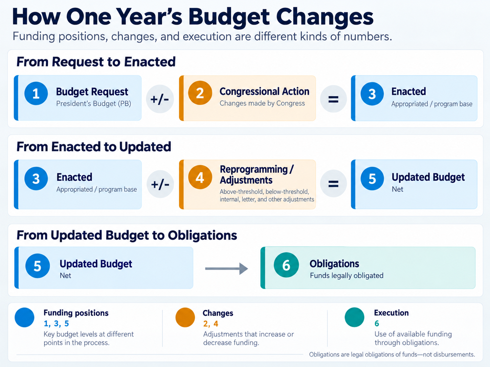

J-book
The request and its justification. Explains what funding supports and proposed changes.
FY2021–FY2027START HERE
Follow funding from the request through execution, see what changed, and read the source explanation behind a figure.
Air Force Operations and Maintenance (AF O&M), 1-year appropriation 3400 only. Supplied documents span FY2021–FY2027; year-end execution is available through FY2025.
A fiscal year (FY) runs from October 1 through September 30 and is named for the year it ends. For example, FY2025 ran from October 1, 2024, through September 30, 2025.
O&M supports day-to-day operations, readiness, maintenance, training, and civilian personnel. This is one part of the Air Force budget; it does not include separate military personnel, procurement, or research appropriations.
“1-year” describes the appropriation’s availability, not the number of years you can compare. Multi-year and X-year funding are excluded. Coverage varies by year and budget area; missing figures are not zero.
Spending plans and individual contracts are not included. The documents may identify adjustment types without explaining the purpose of every action.
One Year follows these categories within a fiscal year. Multi-Year compares their amounts and changes across fiscal years.

Click to enlargeBudget Request, Enacted, and Updated Budget are funding positions. Congressional Action and Reprogramming / Adjustments are changes between positions. A calculated change alone does not identify an individual action.
The request and its justification. Explains what funding supports and proposed changes.
FY2021–FY2027The base after congressional action. “Base for Reprogramming Actions” records the funding base and congressional changes shown in that snapshot.
FY2021–FY2026The later funding picture. Reports adjustments, Updated Budget, and Obligations as of a stated date.
September 30 · FY2021–FY2025They are exhibits within the Budget Justification Book (J-book), not separate reports.
J Book View uses the summary at AF and BA level and the detailed exhibit at SAG level. Transfers are separated where the detailed source provides them.
A J-book’s date tells you when it was prepared. An execution report’s “as of” date tells you when its funding snapshot was taken.
For example, the FY2025 J-book is dated February 2024, during FY2024. It compares the FY2024 estimated budget with the FY2025 Budget Request.
For FY2024 year-end Obligations, use the budget execution report as of September 30, 2024. FY2025 year-end Obligations come from the report as of September 30, 2025.
| Budget fiscal year | J-book date |
|---|
Start with AF O&M overall, choose a BA for a broad mission grouping, then a SAG for a specific activity within it.
For example, BA 03 includes SAG 032A Specialized Skill Training and SAG 032B Flight Training. The SAG dropdown shows only the selected BA’s activities. Use the breadcrumbs to return to the BA or AF overall.
Each view follows its source document. Similar labels do not guarantee identical amounts: documents can reflect different dates, funding scope, or classifications. A later report may include enacted funding or adjustments that an earlier J-book could not yet show.
The FY2025 J-book uses an FY2024 estimate because full-year enactment was not available when it was prepared. That estimate is kept separate from final FY2024 Enacted funding.
One Year uses Enacted plus Reprogramming / Adjustments to reach Updated Budget (called “Net” in execution reports), as of the selected report’s date. J Book View follows the later-year J-book’s terminology and reconciliation. Its “Appropriated” starting position and normalized comparison baseline may differ from Enacted and Updated Budget in the execution report. Baseline adjustments include only what the J-book reflects at preparation, not necessarily all adjustments during the year.
The dashboard preserves each source’s snapshot and flags unresolved differences. Equal and opposite discrepancies do not, by themselves, prove that a transfer occurred.
Price reflects cost factors, such as inflation and pay rates. Program changes reflect changes in requirements or activities; they can include the removal of one-time funding. Transfers move funding between activities or accounts.
A program decrease is not automatically a recurring cut, and a transfer is not automatically a change in the overall Air Force budget.
Select a graph bar. Behind the Numbers reports what the documents say; expand it for supporting detail. Analyst Notes highlights patterns or discrepancies worth reviewing.
Back to summary clears the bar selection without resetting your filters. The information button explains each view’s reporting basis, and Sources links to the original documents.
Start with a notable change or pattern, then open its dashboard detail.
Loading budget data…
ANNUAL APPROPRIATION 3400 ONLY
Air Force Operations and Maintenance (AF O&M) · 1-year funding only.
Each tab remembers your settings for this session.
SOURCE REPORTING
ANALYST REVIEW
Original documents and reporting guidance.
Scope: annual AF O&M appropriation 3400 only. Original reference PDFs can contain additional funding sections; those sections are excluded from dashboard figures and exports.